AbdoRackwitz¶
-
class
AbdoRackwitz(*args)¶ Abdo-Rackwitz solver.
This solver uses first derivative information and can only be used to solve level function problems.
- Available constructors:
AbdoRackwitz(problem)
AbdoRackwitz(problem, tau, omega, smooth)
- Parameters
- problem
OptimizationProblem Optimization problem to solve.
- taufloat
Multiplicative decrease of linear step.
- omegafloat
Armijo factor.
- smoothfloat
Growing factor in penalization term.
- problem
Examples
>>> import openturns as ot >>> model = ot.SymbolicFunction(['E', 'F', 'L', 'I'], ['-F*L^3/(3*E*I)']) >>> problem = ot.OptimizationProblem(model, 5.0) >>> algo = ot.AbdoRackwitz(problem) >>> algo.setStartingPoint([1.0] * 4) >>> algo.run() >>> result = algo.getResult()
Methods
computeLagrangeMultipliers(self, x)Compute the Lagrange multipliers of a problem at a given point.
getClassName(self)Accessor to the object’s name.
getId(self)Accessor to the object’s id.
getMaximumAbsoluteError(self)Accessor to maximum allowed absolute error.
Accessor to maximum allowed constraint error.
Accessor to maximum allowed number of evaluations.
Accessor to maximum allowed number of iterations.
getMaximumRelativeError(self)Accessor to maximum allowed relative error.
getMaximumResidualError(self)Accessor to maximum allowed residual error.
getName(self)Accessor to the object’s name.
getOmega(self)Accessor to omega parameter.
getProblem(self)Accessor to optimization problem.
getResult(self)Accessor to optimization result.
getShadowedId(self)Accessor to the object’s shadowed id.
getSmooth(self)Accessor to smooth parameter.
getStartingPoint(self)Accessor to starting point.
getTau(self)Accessor to tau parameter.
getVerbose(self)Accessor to the verbosity flag.
getVisibility(self)Accessor to the object’s visibility state.
hasName(self)Test if the object is named.
hasVisibleName(self)Test if the object has a distinguishable name.
run(self)Launch the optimization.
setMaximumAbsoluteError(self, …)Accessor to maximum allowed absolute error.
setMaximumConstraintError(self, …)Accessor to maximum allowed constraint error.
setMaximumEvaluationNumber(self, …)Accessor to maximum allowed number of evaluations.
setMaximumIterationNumber(self, …)Accessor to maximum allowed number of iterations.
setMaximumRelativeError(self, …)Accessor to maximum allowed relative error.
setMaximumResidualError(self, …)Accessor to maximum allowed residual error.
setName(self, name)Accessor to the object’s name.
setOmega(self, tau)Accessor to omega parameter.
setProblem(self, problem)Accessor to optimization problem.
setProgressCallback(self, \*args)Set up a progress callback.
setResult(self, result)Accessor to optimization result.
setShadowedId(self, id)Accessor to the object’s shadowed id.
setSmooth(self, tau)Accessor to smooth parameter.
setStartingPoint(self, startingPoint)Accessor to starting point.
setStopCallback(self, \*args)Set up a stop callback.
setTau(self, tau)Accessor to tau parameter.
setVerbose(self, verbose)Accessor to the verbosity flag.
setVisibility(self, visible)Accessor to the object’s visibility state.
-
__init__(self, *args)¶ Initialize self. See help(type(self)) for accurate signature.
-
computeLagrangeMultipliers(self, x)¶ Compute the Lagrange multipliers of a problem at a given point.
- Parameters
- xsequence of float
Point at which the Lagrange multipliers are computed.
- Returns
- lagrangeMultipliersequence of float
Lagrange multipliers of the problem at the given point.
Notes
The Lagrange multipliers
 are associated with the following Lagrangian formulation of the optimization problem:
are associated with the following Lagrangian formulation of the optimization problem: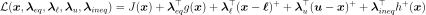
where
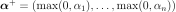
.- The Lagrange multipliers are stored as
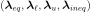
, where: 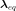
is of dimension 0 if there is no equality constraint, else of dimension the dimension of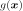
ie the number of scalar equality constraintsand
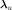
are of dimension 0 if there is no bound constraint, else of dimension of
is of dimension 0 if there is no inequality constraint, else of dimension the dimension of
 ie the number of scalar inequality constraints
ie the number of scalar inequality constraints
The vector
is solution of the following linear system: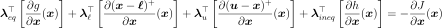
If there is no constraint of any kind,
is of dimension 0, as well as if no constraint is active.
-
getClassName(self)¶ Accessor to the object’s name.
- Returns
- class_namestr
The object class name (object.__class__.__name__).
-
getId(self)¶ Accessor to the object’s id.
- Returns
- idint
Internal unique identifier.
-
getMaximumAbsoluteError(self)¶ Accessor to maximum allowed absolute error.
- Returns
- maximumAbsoluteErrorfloat
Maximum allowed absolute error, where the absolute error is defined by
 where
where 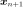
and are two consecutive approximations of the optimum.
are two consecutive approximations of the optimum.
-
getMaximumConstraintError(self)¶ Accessor to maximum allowed constraint error.
- Returns
- maximumConstraintErrorfloat
Maximum allowed constraint error, where the constraint error is defined by
 where is the current approximation of the optimum and
where is the current approximation of the optimum and  is the function that gathers all the equality and inequality constraints (violated values only)
is the function that gathers all the equality and inequality constraints (violated values only)
-
getMaximumEvaluationNumber(self)¶ Accessor to maximum allowed number of evaluations.
- Returns
- Nint
Maximum allowed number of evaluations.
-
getMaximumIterationNumber(self)¶ Accessor to maximum allowed number of iterations.
- Returns
- Nint
Maximum allowed number of iterations.
-
getMaximumRelativeError(self)¶ Accessor to maximum allowed relative error.
- Returns
- maximumRelativeErrorfloat
Maximum allowed relative error, where the relative error is defined by
 if
if 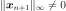
, else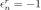
.
-
getMaximumResidualError(self)¶ Accessor to maximum allowed residual error.
- Returns
- maximumResidualErrorfloat
Maximum allowed residual error, where the residual error is defined by
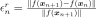
if , else .
, else .
-
getName(self)¶ Accessor to the object’s name.
- Returns
- namestr
The name of the object.
-
getOmega(self)¶ Accessor to omega parameter.
- Returns
- omegafloat
Armijo factor.
-
getProblem(self)¶ Accessor to optimization problem.
- Returns
- problem
OptimizationProblem Optimization problem.
- problem
-
getResult(self)¶ Accessor to optimization result.
- Returns
- result
OptimizationResult Result class.
- result
-
getShadowedId(self)¶ Accessor to the object’s shadowed id.
- Returns
- idint
Internal unique identifier.
-
getSmooth(self)¶ Accessor to smooth parameter.
- Returns
- smoothfloat
Growing factor in penalization term.
-
getTau(self)¶ Accessor to tau parameter.
- Returns
- taufloat
Multiplicative decrease of linear step.
-
getVerbose(self)¶ Accessor to the verbosity flag.
- Returns
- verbosebool
Verbosity flag state.
-
getVisibility(self)¶ Accessor to the object’s visibility state.
- Returns
- visiblebool
Visibility flag.
-
hasName(self)¶ Test if the object is named.
- Returns
- hasNamebool
True if the name is not empty.
-
hasVisibleName(self)¶ Test if the object has a distinguishable name.
- Returns
- hasVisibleNamebool
True if the name is not empty and not the default one.
-
run(self)¶ Launch the optimization.
-
setMaximumAbsoluteError(self, maximumAbsoluteError)¶ Accessor to maximum allowed absolute error.
- Parameters
- maximumAbsoluteErrorfloat
Maximum allowed absolute error, where the absolute error is defined by
where
and are two consecutive approximations of the optimum.
-
setMaximumConstraintError(self, maximumConstraintError)¶ Accessor to maximum allowed constraint error.
- Parameters
- maximumConstraintErrorfloat
Maximum allowed constraint error, where the constraint error is defined by
where is the current approximation of the optimum and is the function that gathers all the equality and inequality constraints (violated values only)
-
setMaximumEvaluationNumber(self, maximumEvaluationNumber)¶ Accessor to maximum allowed number of evaluations.
- Parameters
- Nint
Maximum allowed number of evaluations.
-
setMaximumIterationNumber(self, maximumIterationNumber)¶ Accessor to maximum allowed number of iterations.
- Parameters
- Nint
Maximum allowed number of iterations.
-
setMaximumRelativeError(self, maximumRelativeError)¶ Accessor to maximum allowed relative error.
- Parameters
- maximumRelativeErrorfloat
Maximum allowed relative error, where the relative error is defined by
if , else .
-
setMaximumResidualError(self, maximumResidualError)¶ Accessor to maximum allowed residual error.
- Parameters
- Maximum allowed residual error, where the residual error is defined by
if
, else .
-
setName(self, name)¶ Accessor to the object’s name.
- Parameters
- namestr
The name of the object.
-
setOmega(self, tau)¶ Accessor to omega parameter.
- Parameters
- omegafloat
Armijo factor.
-
setProblem(self, problem)¶ Accessor to optimization problem.
- Parameters
- problem
OptimizationProblem Optimization problem.
- problem
-
setProgressCallback(self, *args)¶ Set up a progress callback.
Can be used to programmatically report the progress of an optimization.
- Parameters
- callbackcallable
Takes a float as argument as percentage of progress.
Examples
>>> import sys >>> import openturns as ot >>> rosenbrock = ot.SymbolicFunction(['x1', 'x2'], ['(1-x1)^2+100*(x2-x1^2)^2']) >>> problem = ot.OptimizationProblem(rosenbrock) >>> solver = ot.OptimizationAlgorithm(problem) >>> solver.setStartingPoint([0, 0]) >>> solver.setMaximumResidualError(1.e-3) >>> solver.setMaximumIterationNumber(100) >>> def report_progress(progress): ... sys.stderr.write('-- progress=' + str(progress) + '%\n') >>> solver.setProgressCallback(report_progress) >>> solver.run()
-
setResult(self, result)¶ Accessor to optimization result.
- Parameters
- result
OptimizationResult Result class.
- result
-
setShadowedId(self, id)¶ Accessor to the object’s shadowed id.
- Parameters
- idint
Internal unique identifier.
-
setSmooth(self, tau)¶ Accessor to smooth parameter.
- Parameters
- smoothfloat
Growing factor in penalization term.
-
setStartingPoint(self, startingPoint)¶ Accessor to starting point.
- Parameters
- startingPoint
Point Starting point.
- startingPoint
-
setStopCallback(self, *args)¶ Set up a stop callback.
Can be used to programmatically stop an optimization.
- Parameters
- callbackcallable
Returns an int deciding whether to stop or continue.
Examples
>>> import openturns as ot >>> rosenbrock = ot.SymbolicFunction(['x1', 'x2'], ['(1-x1)^2+100*(x2-x1^2)^2']) >>> problem = ot.OptimizationProblem(rosenbrock) >>> solver = ot.OptimizationAlgorithm(problem) >>> solver.setStartingPoint([0, 0]) >>> solver.setMaximumResidualError(1.e-3) >>> solver.setMaximumIterationNumber(100) >>> def ask_stop(): ... return True >>> solver.setStopCallback(ask_stop) >>> solver.run()
-
setTau(self, tau)¶ Accessor to tau parameter.
- Parameters
- taufloat
Multiplicative decrease of linear step.
-
setVerbose(self, verbose)¶ Accessor to the verbosity flag.
- Parameters
- verbosebool
Verbosity flag state.
-
setVisibility(self, visible)¶ Accessor to the object’s visibility state.
- Parameters
- visiblebool
Visibility flag.